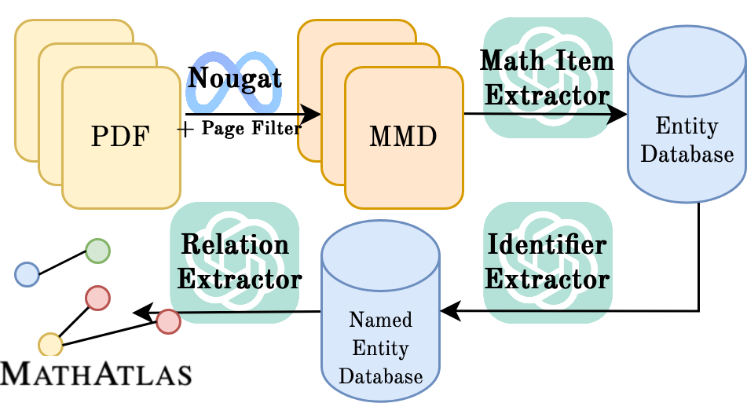
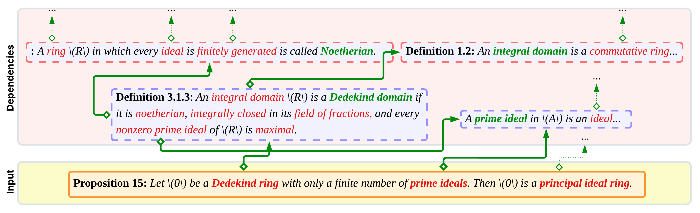
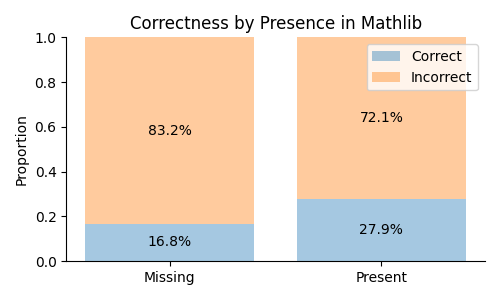
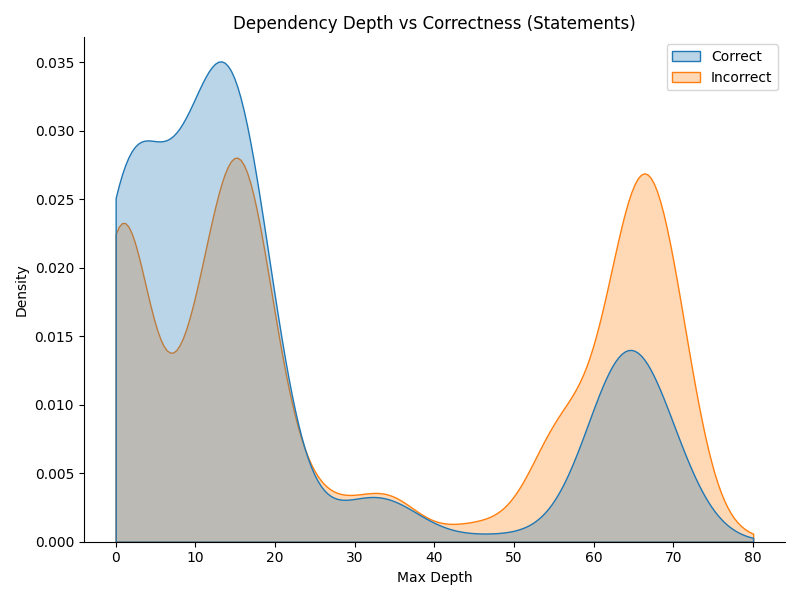

Benchmarks LLM autoformalization of graduate textbook statements and definitions into Lean 4/Mathlib, measuring compile rate against Lean v4.24.0 and semantic faithfulness.
Abstract
Current autoformalization benchmarks are largely focused on olympiad or undergraduate mathematics, while graduate and research-level mathematics remains underexplored. In this paper, we introduce MathAtlas, the first large-scale autoformalization benchmark of in the wild graduate-level mathematics, containing 52k theorems, definitions, exercises, examples, and proofs extracted from 103 graduate mathematics textbooks. MathAtlas is enriched with a mathematical dependency graph containing 178k relations, and is the first autoformalization benchmark to include such relations, facilitating evaluation and development of dependency-aware autoformalization systems. Our extensive experiments show that MathAtlas is high quality but extremely challenging: strong baselines achieve at most 9.8% correctness on theorem statements and 16.7% on definitions. Furthermore, we find performance of state-of-the-art models degrades substantially with dependency depth: on MA-Hard, a subset of 700 entities with the deepest dependency trees, the best model achieves only 2.6% correctness for autoformalization on this challenging dataset. We release MathAtlas to the community as a benchmark set for large-scale autoformalization of graduate-level mathematics in the wild.
Problem
Existing autoformalization benchmarks focus on olympiad or undergraduate mathematics and on theorem statements. Graduate-level material, definitions, and prerequisite dependency structure are largely left untested.
Approach
MathAtlas is a dataset of about 52k definitions, theorems, exercises, examples, and proofs extracted automatically from 103 graduate textbooks. It is linked by a dependency graph of about 178k relations. Models are evaluated on formalizing these entities into Lean 4, with correctness defined as both compiling and being semantically faithful. MA-Align, a 200-item faithfulness benchmark, is introduced to assess LLM-as-judge metrics, and MA-Hard collects the roughly 700 entities with the deepest dependency trees.

Figure 5 : MathAtlas creation pipeline. For visual convenience, we combine the “name” and “reference” extractors into one step called “identifier extractor.”

Figure 1 : An entity from MathAtlas together with a subgraph of its dependency tree. In yellow (bottom), we have a target theorem statement to be formalized (Proposition 15). Proposition 15 contains three “object references” to previously defined mathematical concepts: Dedeking ring, prime ideals, and principal ideal ring, which are dependencies needed to correctly formalize the theorem. These obj
Results
The best baselines reach 9.8% correctness on statements (ReForm 8B) and 16.7% on definitions (gpt-oss-120b). The best model reaches only 2.6% on MA-Hard. Correctness drops with dependency depth and is higher for entities found in Mathlib via LeanSearch.

Figure 3 : Correctness of formalized entities from our best models compared with presence in Mathlib. Entities which our retrieval system (LeanSearch [ 11 ] ) found in Mathlib are significantly more likely to be correctly formalized than otherwise.

(b) Correctness versus dependency depth of our best performing system for statements (ReForm 8B)